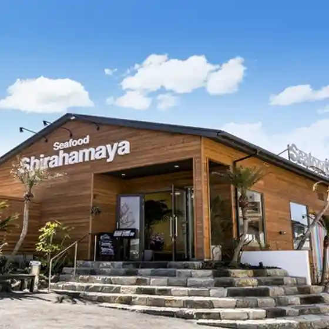
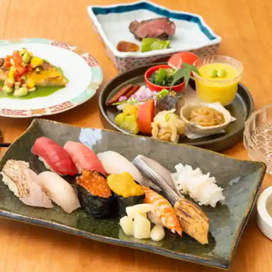
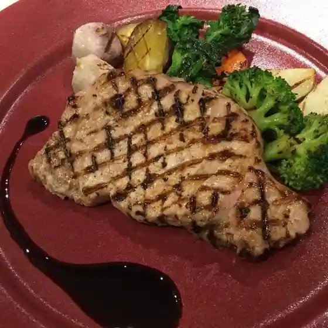
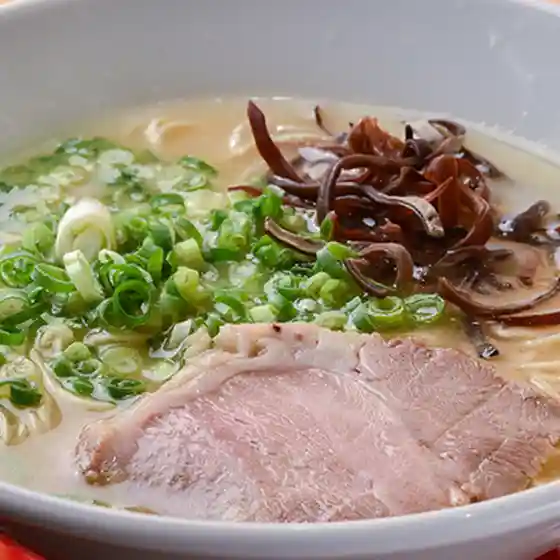
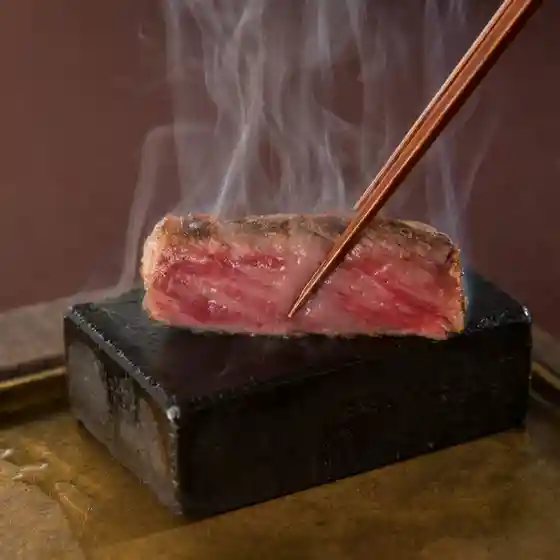
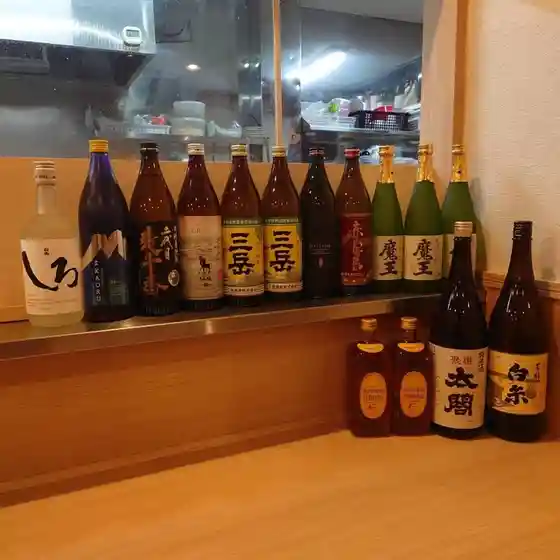
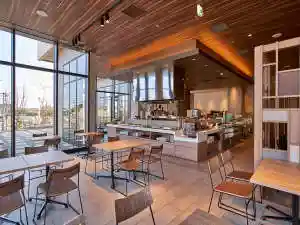
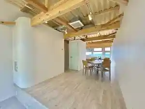

Itoshima
Itoshima · Fukuoka
Itoshima
Highlighted on the Fukuoka map.

Sights
Sakurai Futamigaura
Kai Ya no Daimon

Shiroito Falls

Ikazuchiyama Sen Jo Tera Daihi Oin

Ichiran Forest Itoshima

Heigen Rekishi Park no Kosumosu
Kamiari Shrine (Jinseki)
Mamushi Baths
Ikazuchiyama Sen Jo Tera Daihi Oin Dai Kaede no Autumn Leaves
Hako Shima Shrine
Kai Ya no Daimon Park (Nature Promenade)
Fuku Fuku Village (Fukuyoshi Fureai Koryu Center)
Tateishi Yama Kara no Zekkei
Ane Ko no Hama (Naki Suna)
Ito no Yu Dokoro
Kai Ya Beach
Heigen Rekishi Park
Itoshima Kaki Koya
Dining
浜焼き白浜家
Hamayaki Ki Shirahama Ie

鮨創作割烹ちく
Sushi Sousaku Kappou Chiku

Osteria&Pizzeria Felice
Osteria&Amp;Pizzeria Felice
noda
Noda

屋台 名ヲ時ヲ
Yatai Mei Wo Toki Wo

ステーキガーデン糸島風の邱
Suteekigaaden Ito Shima Kaze No Kyuu

和処 あかつき
Wa Tokoro Akatsuki

とまり木
Tomari Ki
糸島焼肉 暁
Ito Shima Yakiniku Akatsuki
鉄板焼・お好み焼き 鉄板本舗
Teppanyaki ・ O Konomi Yaki Teppan Honpo
焼肉炙り乃
Yakiniku Aburi No
サフラン
Safuran
和らく
Yawara Ku
bistro vines
Bistro Vines
klootch
Klootch
糸島とりかわ かわやん
Ito Shima Torikawa Kawayan
HIMIKO太陽と月
Himiko Taiyou To Gatsu
博多とりかわ 鬼皮 芥屋店
Hakata Torikawa Onigawa Kai Ya Mise
味楽寿司
Aji Rakuju Tsukasa
藤次郎
Toujirou
雲海
Unkai
アッカプントエッフェ
Akkapuntoeffe
僧伽小野 一秀庵
Sougya Ono Kazuhide Iori
牡蠣小屋 住吉丸
Kaki Koya Sumiyoshi Maru
豊漁丸
Houryou Maru
みるくがき豊久丸
Mirukugaki Toyohisa Maru
正栄
Shouei
もっくん
Mokkun
糸島食堂 本店
Ito Shima Shokudou Honten
ジロ
Jiro
ケンちゃんかき
Ken Chankaki
糸島ほたる
Ito Shima Hotaru
鰻いとしま
Unagi Itoshima
Quercia
Quercia
糸島牡蠣小屋ひろちゃんカキ
Ito Shima Kaki Koya Hirochan Kaki
お菓子と暮らしの物 りた
O Kashi To Kurashi No Mono Rita
Contigo
Contigo
カレント
Karento
カノオ醤油味噌醸造元
Kanoo Shouyuaji So Jouzoumoto
板垣ファーム
Itagaki Faamu
中国料理樹蘭
Chuugokuryouri Juran
とうふ家酒瀬川
Toufu Ie Sake Segawa
そしじのうたげ
Soshijinoutage
bleuchat coffee
Bleuchat Coffee
駅前の魚屋さん
Ekimae No Sakanaya San
星乃珈琲 糸島店
Hoshino Koohii Ito Shima Mise
サントス
Santosu
鯛らーめん 穂と花.
Tai Raamen Ho To Hana .
糸島フルーツパーラー
Ito Shima Furuutsupaaraa
ヤギタコス
Yagitakosu
カキの徳栄丸
Kaki No Tokuharu Maru
ウェスタン マリン
Uesutan Marin
喫茶 純
Kissa Jun
Solori
Solori
nicori
Nicori
スコーン専門店 キナフク
Sukoon Senmonten Kinafuku
LAS cafe
Las Cafe
JF糸島 志摩の四季
Jf Ito Shima Shima No Shiki
糸島食堂 伊都ハイランド店
Ito Shima Shokudou Ito Hairando Mise
喜八荘
Kihachi Sou
Kaki House Maruhachi Itoshima Fukuoka Prefecture Kyushu
Kaki House Maruhachi Itoshima Fukuoka Prefecture Kyushu
Kaki House Maruhachi Itoshima Fukuoka Prefecture Kyushu
Kaki House Maruhachi Itoshima Fukuoka Prefecture Kyushu
Kaki House Maruhachi Itoshima Fukuoka Prefecture Kyushu
Kaki House Maruhachi Itoshima Fukuoka Prefecture Kyushu
Kaki House Maruhachi Itoshima Fukuoka Prefecture Kyushu
Kaki House Maruhachi Itoshima Fukuoka Prefecture Kyushu
Kakigoya Sumiyoshimaru Itoshima Fukuoka Prefecture Kyushu
Kakigoya Sumiyoshimaru Itoshima Fukuoka Prefecture Kyushu
Kakigoya Sumiyoshimaru Itoshima Fukuoka Prefecture Kyushu
Kakigoya Sumiyoshimaru Itoshima Fukuoka Prefecture Kyushu
Kakigoya Sumiyoshimaru Itoshima Fukuoka Prefecture Kyushu
Kakigoya Sumiyoshimaru Itoshima Fukuoka Prefecture Kyushu
Kakigoya Sumiyoshimaru Itoshima Fukuoka Prefecture Kyushu
Kakigoya Sumiyoshimaru Itoshima Fukuoka Prefecture Kyushu
Restaurant Futamigaura Itoshima Fukuoka Prefecture Kyushu
Restaurant Futamigaura Itoshima Fukuoka Prefecture Kyushu
Restaurant Futamigaura Itoshima Fukuoka Prefecture Kyushu
Restaurant Futamigaura Itoshima Fukuoka Prefecture Kyushu
Restaurant Futamigaura Itoshima Fukuoka Prefecture Kyushu
Restaurant Futamigaura Itoshima Fukuoka Prefecture Kyushu
Restaurant Futamigaura Itoshima Fukuoka Prefecture Kyushu
Restaurant Futamigaura Itoshima Fukuoka Prefecture Kyushu
Tsukamoto Fresh Fish Itoshima Fukuoka Prefecture Kyushu
Tsukamoto Fresh Fish Itoshima Fukuoka Prefecture Kyushu
Tsukamoto Fresh Fish Itoshima Fukuoka Prefecture Kyushu
Tsukamoto Fresh Fish Itoshima Fukuoka Prefecture Kyushu
Tsukamoto Fresh Fish Itoshima Fukuoka Prefecture Kyushu
Tsukamoto Fresh Fish Itoshima Fukuoka Prefecture Kyushu
Tsukamoto Fresh Fish Itoshima Fukuoka Prefecture Kyushu
Tsukamoto Fresh Fish Itoshima Fukuoka Prefecture Kyushu
Ito Aguri Itoshima Fukuoka Prefecture Kyushu
Ito Aguri Itoshima Fukuoka Prefecture Kyushu
Ito Aguri Itoshima Fukuoka Prefecture Kyushu
Ito Aguri Itoshima Fukuoka Prefecture Kyushu
Ito Aguri Itoshima Fukuoka Prefecture Kyushu
Ito Aguri Itoshima Fukuoka Prefecture Kyushu
Ito Aguri Itoshima Fukuoka Prefecture Kyushu
Ito Aguri Itoshima Fukuoka Prefecture Kyushu
Kozai no Mori Itoshima Fukuoka Prefecture Kyushu
Kozai no Mori Itoshima Fukuoka Prefecture Kyushu
Kozai no Mori Itoshima Fukuoka Prefecture Kyushu
Kozai no Mori Itoshima Fukuoka Prefecture Kyushu
Kozai no Mori Itoshima Fukuoka Prefecture Kyushu
Kozai no Mori Itoshima Fukuoka Prefecture Kyushu
Kozai no Mori Itoshima Fukuoka Prefecture Kyushu
Kozai no Mori Itoshima Fukuoka Prefecture Kyushu
Hamayaki Shirahamaya Itoshima Fukuoka Prefecture Kyushu
Hamayaki Shirahamaya Itoshima Fukuoka Prefecture Kyushu
Hamayaki Shirahamaya Itoshima Fukuoka Prefecture Kyushu
Hamayaki Shirahamaya Itoshima Fukuoka Prefecture Kyushu
Hamayaki Shirahamaya Itoshima Fukuoka Prefecture Kyushu
Hamayaki Shirahamaya Itoshima Fukuoka Prefecture Kyushu
Hamayaki Shirahamaya Itoshima Fukuoka Prefecture Kyushu
Hamayaki Shirahamaya Itoshima Fukuoka Prefecture Kyushu
Hamayaki Shirahamaya Itoshima Fukuoka Prefecture Kyushu
Hamayaki Shirahamaya Itoshima Fukuoka Prefecture Kyushu
Bakery Restaurant Current Itoshima Fukuoka Prefecture Kyushu
Bakery Restaurant Current Itoshima Fukuoka Prefecture Kyushu
Bakery Restaurant Current Itoshima Fukuoka Prefecture Kyushu
Bakery Restaurant Current Itoshima Fukuoka Prefecture Kyushu
Kaki House Maruhachi Itoshima Fukuoka Prefecture Kyushu
Kaki House Maruhachi Itoshima Fukuoka Prefecture Kyushu
Kaki House Maruhachi Itoshima Fukuoka Prefecture Kyushu
Kaki House Maruhachi Itoshima Fukuoka Prefecture Kyushu
Ichiran Ichiran no Mori Itoshima Fukuoka Prefecture Kyushu
Ichiran Ichiran no Mori Itoshima Fukuoka Prefecture Kyushu
Ichiran Ichiran no Mori Itoshima Fukuoka Prefecture Kyushu
Ichiran Ichiran no Mori Itoshima Fukuoka Prefecture Kyushu
Tsumande Goran Cake Factory Itoshima Fukuoka Prefecture Kyushu
Tsumande Goran Cake Factory Itoshima Fukuoka Prefecture Kyushu
Tsumande Goran Cake Factory Itoshima Fukuoka Prefecture Kyushu
Tsumande Goran Cake Factory Itoshima Fukuoka Prefecture Kyushu
Murakamiya Hompo Shirayuki Itoshima Fukuoka Prefecture Kyushu
Murakamiya Hompo Shirayuki Itoshima Fukuoka Prefecture Kyushu
Murakamiya Hompo Shirayuki Itoshima Fukuoka Prefecture Kyushu
Murakamiya Hompo Shirayuki Itoshima Fukuoka Prefecture Kyushu
Kakigoya Sumiyoshimaru Itoshima Fukuoka Prefecture Kyushu
Kakigoya Sumiyoshimaru Itoshima Fukuoka Prefecture Kyushu
Stay
ホテルニューガイア糸島
Hoterunyuugaia Ito Shima
2-times.Domitory Hotel
2-Times . Domitory Hotel
糸島ゲストハウス＆バックパッカ－ズ ＴＯＭＯ
Ito Shima Gesutohausu & Bakkupakka - Zu T O M O
HOTEL AZ 福岡糸島店
Hotel Az Fukuoka Ito Shima Mise

グローカルホテル糸島
Gurookaruhoteru Ito Shima

Lohas Resort Fukae
Lohas Resort Fukae
夏めく
Natsu Meku

SAND
Sand
ラストピース
Rasutopiisu
WADATSUMI
Wadatsumi
ubusuna佐波
Ubusuna Sawa
farm stay Jammin
Farm Stay Jammin
ubusuna空火海
Ubusuna Sora Hi Umi
空火海（ＫＵＢＩＫＡＩ）
Sora Hi Umi ( K U B I K A I )
１ｃｏ．ＩＴＯＳＨＩＭＡ（ワンコイトシマ）
1 C O . I T O S H I M A ( Wankoitoshima )
THE SHIKAKA
The Shikaka
糸島のグランピングｎｉｊｏ
Ito Shima No Guranpingu N I J O